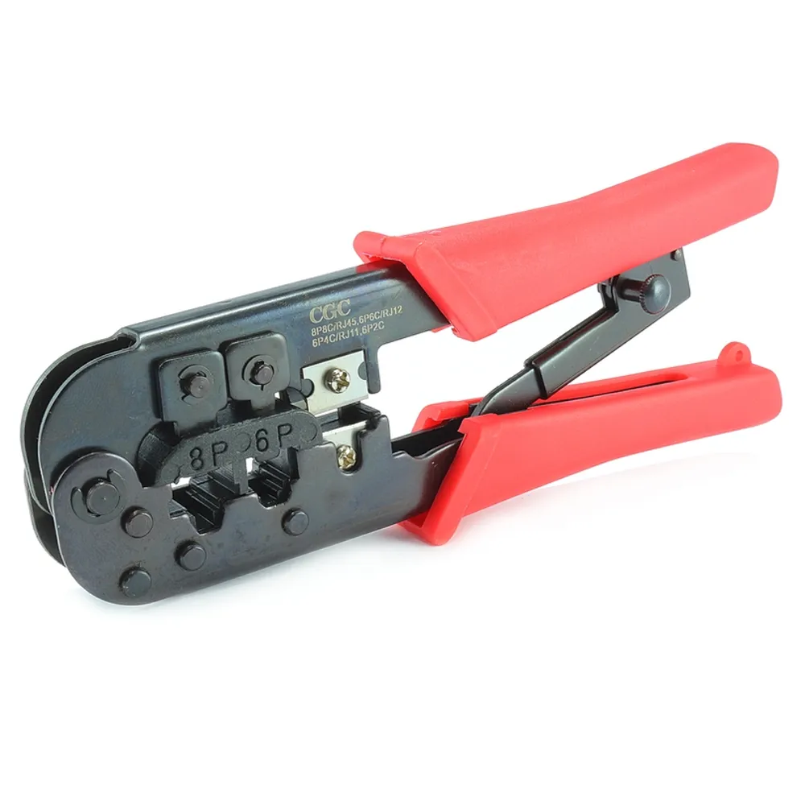

Um alicate de crimpagem RJ45 é uma ferramenta essencial para profissionais que trabalham com redes de computadores, telefonia e cabeamento estruturado. Sua principal função é crimpar (moldar e fixar) conectores RJ45 (e muitas vezes também RJ11/RJ12 para telefonia) em cabos de rede. 
O alicate de crimpagem RJ45 serve para:
Embora o processo possa variar ligeiramente entre os modelos de alicate e o tipo de conector (convencional ou de passagem/vazado), os passos básicos para crimpar um cabo de rede RJ45 são:
Existem diversos modelos de alicates de crimpagem RJ45, desde os mais básicos até os profissionais com recursos extras como catraca (que garante a pressão ideal) e compatibilidade com diferentes tipos de conectores (RJ11/RJ12, RJ45 Cat5e, Cat6, Cat7).
Você pode encontrar alicates de crimpagem RJ45 em lojas de eletrônicos, informática, materiais elétricos e grandes varejistas online como:
Algumas marcas populares e bem avaliadas no mercado incluem Stanley, Hikari, Vonder, HYX e Furukawa. A escolha do modelo ideal dependerá da frequência de uso, do tipo de conector com que você irá trabalhar e do seu orçamento.
Se você tem alguma dúvida sobre qual modelo escolher ou como realizar um passo específico da crimpagem, sinta-se à vontade para perguntar!